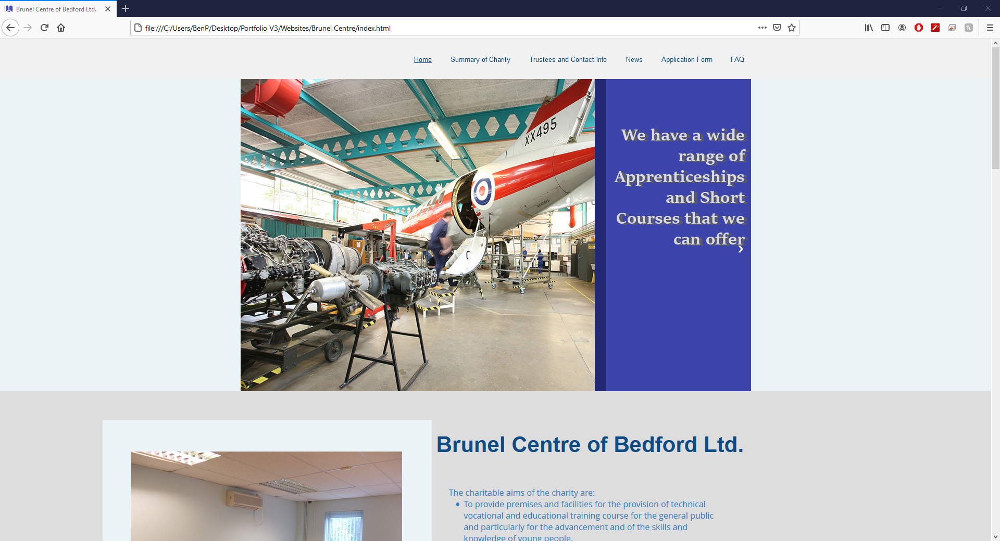

Websites
Bride-les-Bains

This is a site I developed for a client through freelance. I stayed in contact through the whole of the project life-cycle, giving the client updates on changes that have been made while also taking the feedback the client gives into account during the development life-cycle.
This project was developed through an agile methodology which meant developing the website in parts and showing the client once those parts where completed. The site was made by me from scratch using a text editor called Notepad++ using the languages: HTML, CSS, and JavaScript. Once a cycle of development had passed and it was time to send the website to the client for feedback I used a hosting site called 000webhost to temporarily host the site for free with a generated DNS so that I could easily share the site with the client. This will be taken down once the website has been approved and is moved to their choice of hosting service with my help. This experience gave me more of a real view into how developing websites for a real client worked, while also giving me some good experience on freelance development. I also helped the client get their site set up and hosted on GoDaddy's hosting service with a domain they had brought.
Link to Site
Brunel Centre Assignment
For an assignment when I was a student at Bedford College, we were split into groups to make a site for a real client, who where the Brunel Centre. My role in my group was the leader as I knew the most about website development in my group at the time, this meant I would make sure everyone was doing equal amounts of work while making sure the product came together in a way that worked for the project.
The first thing our group did was design the site using a template editor on a site making service called Wix.com. then we took this design and made it from scratch using Notepad++ so we could have a lot more control over how the site looked and functioned. This site was made using the languages: HTML, CSS, JavaScript, and PHP. However this site no longer has active features for the PHP forms as this site did not get chosen for the client to use as their site, the PHP code still remains in the project folder. This was a good experience in team work within a project, and taking an active leader role in a project was still new to me at the time and this helped me gain experience in that too.
Link to Site